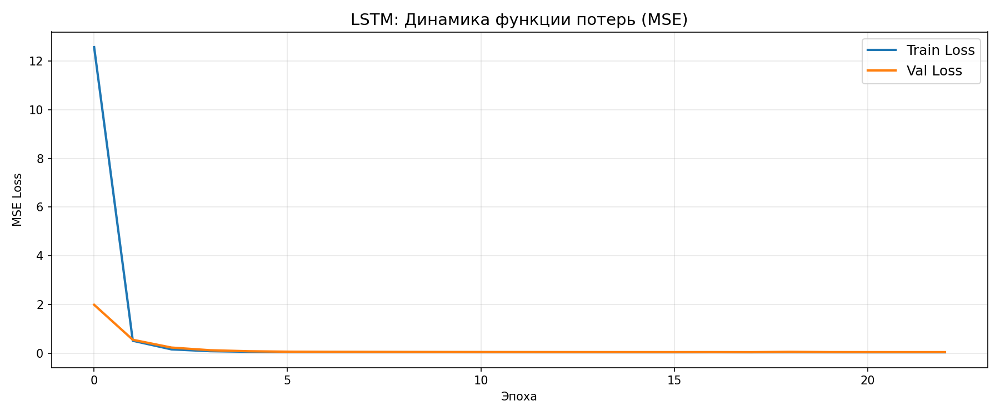
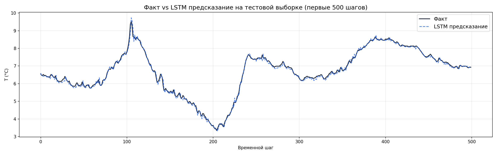
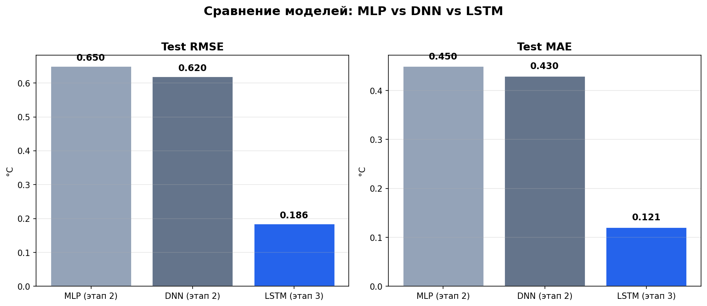
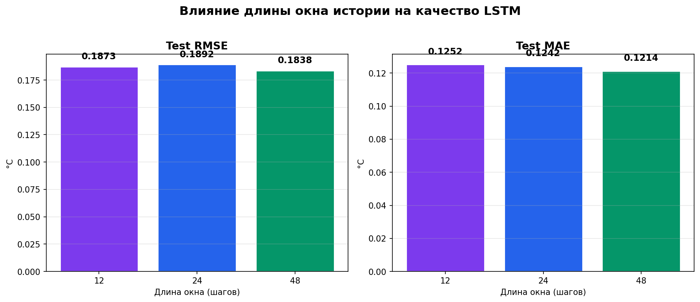

Assignment 3: Recurrent Neural Networks
Построение и обучение рекуррентной нейросети с долгой краткосрочной памятью (LSTM) для учёта временной структуры данных. Сравнение с полносвязными моделями из этапа 2.
Данные Jena Weather преобразованы в формат supervised learning с использованием скользящего окна.
t создаётся окно из 24 предыдущих наблюдений (4 часа при интервале 10 мин).T(degC) на шаг t.(samples, 24, features).Каждый sample = матрица 24 × N_features
Двухслойная LSTM-модель с полносвязным выходным слоем.
Мониторинг MSE на обучающей и валидационной выборках. EarlyStopping остановил обучение при стабилизации val_loss примерно на 22-й эпохе. Потери резко упали с ~12.5 (эпоха 0) до ~0 уже к 3-й эпохе.

Train Loss vs Validation Loss по эпохам обучения.

Сравнение истинных и предсказанных значений температуры на тестовой выборке (первые 500 шагов).
LSTM точно воспроизводит суточные и многочасовые колебания температуры, улавливая как тренды, так и локальные экстремумы.
Количественное сравнение трёх архитектур на тестовой выборке.
| Модель | Архитектура | Test RMSE | Test MAE |
|---|---|---|---|
| MLP | 3 скрытых слоя (64→32→16) | 0.650 °C | 0.450 °C |
| DNN | 5 скрытых слоёв (128→64→32→16→8) | 0.620 °C | 0.430 °C |
| LSTM | 2 слоя LSTM (64→32) + Dense(1) | 0.186 °C | 0.121 °C |

Сравнение Test RMSE и Test MAE для трёх архитектур.
Эксперимент с тремя длинами окна истории для оценки влияния на точность прогноза LSTM.
| Окно | Время | Test RMSE | Test MAE |
|---|---|---|---|
| 12 шагов | 2 часа | 0.1873 °C | 0.1252 °C |
| 24 шага | 4 часа | 0.1892 °C | 0.1242 °C |
| 48 шагов ✓ | 8 часов | 0.1838 °C | 0.1214 °C |

Влияние длины окна на RMSE и MAE на тестовой выборке.
lstm_best.h5Итог: LSTM (RMSE=0.186 °C, MAE=0.121 °C) превзошёл MLP и DNN более чем в 3 раза, эффективно моделируя временные ряды метеоданных за счёт механизма памяти и последовательной обработки.